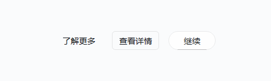

原生 Qt，顺手接入
保留熟悉的信号、布局和模型接口。现有项目可以逐个引入控件。
FluentPy，让每个人都能用上的 Fluent 风格桌面组件库。
从一个按钮开始，把心里的应用一步步做出来。
Python 3.10+ · PySide6 · 可选 C 加速
先体验一下？下载 Windows 工作台
保留熟悉的信号、布局和模型接口。现有项目可以逐个引入控件。
按钮、表格、导航、日期选择和消息提示，让基础界面更快成形。
统一主题、强调色与状态反馈，为你的桌面应用留出自己的风格。
先看，再动手

从这里开始
安装名是 fluentpy-qt，代码中使用 fluentpy。PySide6
会作为依赖安装。
python -m pip install fluentpy-qt
import sys
from fluentpy import AccentButton, FluentWindow
from fluentpy.qt import QtWidgets
app = QtWidgets.QApplication(sys.argv)
window = FluentWindow("你好，FluentPy")
window.resize(800, 560)
window.set_title_bar_enabled(True)
window.content_layout.addWidget(AccentButton("开始创作"))
window.show()
sys.exit(app.exec())一个持续生长的开源项目
由性邓的小馒头独立开发。FluentPy 的初衷，是打造人人用得起、谁都能用的 Windows Fluent 风格 Qt 组件库。欢迎一起发现问题、分享作品，也欢迎参与改进。